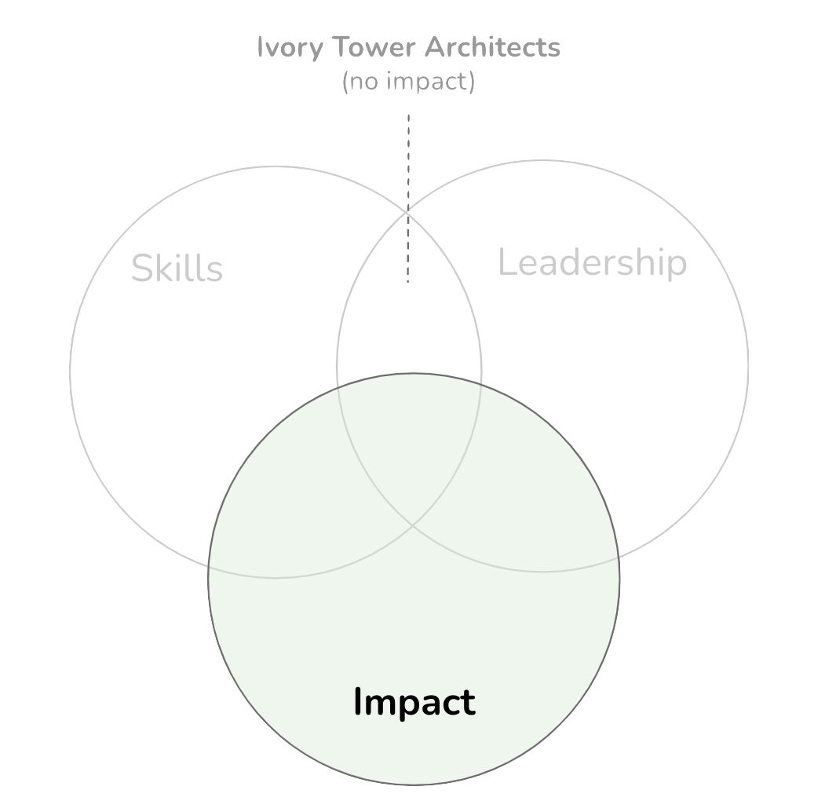
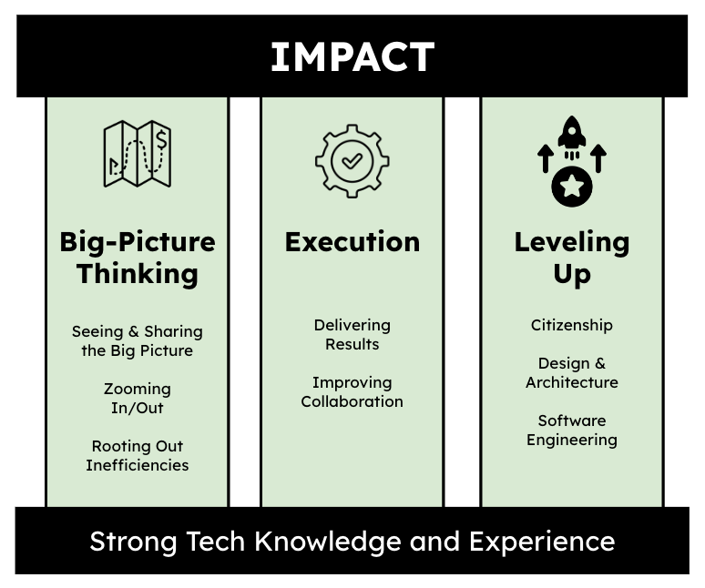

Making Impact
IN THIS SECTION, YOU WILL: Understand that architects’ work is evaluated based on their impact on the organization and get guidelines for making an impact.
KEY POINTS:
- Architects’ work is evaluated based on their impact on the organization.
- Architects can make an impact through three pillars: Big-Picture Thinking, Execution, and Leveling-Up.
Architecture is not judged by elegance alone. What distinguishes strong architects is the impact they have on the organization.
This chapter matters because Grounded Architecture is ultimately an argument about usefulness. Data, collaboration, governance, and strategy only matter if they improve outcomes. Impact is therefore the test of whether architectural work is connected to reality or drifting into abstraction.

Figure 1: Impact is one of the three main elements of being an architect (skills, impact, leadership). Leadership without impact lacks foundation and may signal that you have become an ivory tower architect with a weak relation to reality.So, How Can We Measure Impact?
Architects shape outcomes in ways that are often indirect but highly consequential. Their contribution usually shows up in three areas:
1. Spotting and Solving Strategic Problems
Great architects do not wait for problems to become crises. They identify high-leverage issues early, whether those issues involve architectural debt, technical bottlenecks, or misalignment with business goals. Their value lies in addressing problems before they harden into constraints.
2. Creating Deep and Wide Organizational Impact
Architects combine depth and breadth. They go deep where clarity is needed, then step back to see how a solution can be reused, scaled, or standardized across teams. That ability to connect local decisions to system-wide consequences turns isolated improvements into organizational gains.
3. Delivering What Others Can’t
Some challenges require an unusual mix of technical judgment, influence, and long-term thinking. High-stakes migrations, cross-team trade-offs, and ambiguous transformation work often fall into this category. Architects create value when they can make progress where others stall.
Architects are outcome enablers. Their success is not measured by diagrams or reviews alone, but by the progress they enable, the risks they reduce, and the quality of the systems and decisions they leave behind.
Pillars of Impact
Architects need more than technical depth. They also need business judgment, interpersonal range, and the ability to turn ideas into outcomes. As careers progress, the focus should shift from collecting skills to building capabilities that matter at organizational scale.
The best development path is grounded in concrete work: real problems that demand action, judgment, and reflection. That is where skills become impact.
One way to frame this development journey is by looking at the Staff Engineering path. For example, Tanya Reilly’s The Staff Engineer’s Path and Will Larson’s Staff Engineer: Leadership beyond the management track provide fantastic insights into the responsibilities and expectations we face in architectural roles.

Figure 2: Key competencies of architects. Inspired by *The Staff Engineer’s Path by Tanya Reilly.*
Based on these frameworks, I group architectural impact into three pillars:
1. Big-Picture Thinking
Big-picture thinking means looking beyond the immediate solution. Architects need to understand how technical choices fit the organization’s strategy, constraints, and market context, then help others act on that understanding.
This includes skills like:
- Strategic planning
- Systems thinking
- Translating business needs into technical direction
- Anticipating long-term impacts and opportunities
2. Execution
Execution is where ideas become outcomes. Architects help teams deliver sustainable solutions by managing complexity, aligning stakeholders, and making progress under real-world constraints.
Key skills in this area include:
- Technical leadership during delivery
- Cross-team collaboration
- Risk mitigation and adaptive planning
- Ensuring quality and fit-for-purpose outcomes
3. Leveling Up
Leveling up is about building people and capabilities, not only systems. Architects raise the bar through mentoring, coaching, and turning tacit knowledge into reusable practices.
This pillar involves:
- Coaching and mentoring
- Fostering a culture of learning
- Capturing knowledge into reusable patterns and practices
- Staying up-to-date with industry trends and techniques
These three pillars help architects move from technical contributors to strategic change agents with broad and durable influence.
Big-Picture Thinking
Architects often provide the helicopter view that organizations otherwise lack. They can see across teams, systems, and priorities, and they can anticipate how today’s decisions will shape tomorrow’s constraints.
This strategic perspective enables architects to make contributions in four key ways:
Spotting High-Leverage Points
Big-picture thinkers identify where small changes create disproportionate results. That may mean removing a system bottleneck, correcting a team boundary, or addressing a hidden scaling issue before it becomes expensive.
Helping Others See the Whole Picture
The point is not to keep that perspective private. Architects help others see the larger system through reviews, roadmaps, and tools such as Lightweight Architectural Analytics. That shared visibility improves alignment and reduces friction.
Zooming In and Out
Strong architects can operate at both high altitude and ground level. They explain how a project fits long-term business goals, then work through the details required to make that strategy real.
Uncovering Inefficiencies
From that vantage point, architects can spot systemic inefficiencies such as duplicate systems, redundant effort, and brittle dependencies, then drive improvements that benefit multiple teams at once.
Applied consistently, big-picture thinking brings strategic clarity. It helps teams build the right systems, for the right reasons, in a way the organization can sustain.
Execution
Strategic thinking matters, but impact requires execution. Architects create value when they help teams deliver practical results, not when they stop at elegant designs.
Execution depends on two things: pragmatism and collaboration.
Delivering Results with Pragmatism
Architects add value by turning ideas into action. That requires practical judgment, a clear view of constraints, and sustained attention to outcomes.
-
Build Solutions That Work in the Real World
Effective architects avoid theoretical overreach. They focus on solutions that are feasible, valuable, and grounded in the organization’s technical, cultural, and operational reality. -
Simplify the Complex
One of the most valuable architectural skills is breaking large, complex problems into manageable parts. That creates momentum without losing coherence. -
Plan with Constraints in Mind
Ideal solutions rarely survive contact with reality. The best architects balance ambition with feasibility by accounting for technical debt, staffing, timelines, and organizational readiness.
Enhancing Collaboration
Architects are often in the best position to connect different parts of the organization. By building trust and alignment, they help teams move faster with less confusion.
-
Create Strategic Alignment
A large part of the role is to clarify goals and show how local work contributes to broader outcomes. Shared direction reduces waste and improves decision quality. -
Facilitate Stronger Teamwork
Architects often act as connectors and facilitators. They coordinate across teams, resolve friction, and keep communication moving where dependencies would otherwise slow everything down. -
Engage Across Departments
Great architects do not stay in their own lane. They build bridges across teams and disciplines, absorb different perspectives, and turn those perspectives into coherent plans.
Architects who focus on execution turn large ideas into concrete progress. They combine technical depth, practical judgment, and cross-team collaboration so that good ideas become successful outcomes.
Leveling Up
Architects help organizations level up by acting as leaders, mentors, and role models. They influence not only how systems are built, but also how teams learn and improve.
This role shows up in three areas: citizenship, design and architecture, and software engineering.
Citizenship: Supporting the Community and Culture
Architects often act as the champions of their organization’s technical culture and its professional community. Their impact goes far beyond just coding or design reviews.
-
Sharing Knowledge
Strong architects share what they know through talks, documents, mentoring, and public writing. Knowledge that stays trapped in one person does not scale. -
Leading by Example
Real leadership means stepping into meaningful, difficult work, especially when that work crosses team boundaries. -
Shaping a Strong Engineering Culture
By modeling curiosity, humility, and craftsmanship, architects help create a culture where learning and collaboration are normal, not exceptional. -
Expanding Industry Influence
Some architects also contribute beyond their own company, helping raise standards across the wider community.
Design and Architecture: Defining What “Good” Looks Like
Architects help define the technical foundation and direction of systems.
-
Setting and Evolving Standards
Through experience, architects help define and refine what good architecture looks like. They make quality visible and actionable. -
Solving Big-Picture Problems
They also identify systemic problems, such as scalability and integration weaknesses, and shape solutions that can endure.
Software Engineering: Staying Hands-On and Leading Technically
Despite their strategic role, strong architects stay close enough to engineering reality to lead credibly.
-
Demonstrating Best Practices
They set the standard in areas such as clean code, testing, documentation, and observability. Standards become persuasive when they are demonstrated, not merely declared. -
Tackling Tough Challenges
When complexity rises, architects are often the people who can unblock teams, frame the trade-offs, and move difficult work forward.
By contributing in these ways, architects help organizations level up technically and culturally. They raise standards, improve decisions, and make other people more effective.
Final Thoughts
Architecture is about more than technology. It is about producing lasting impact through better systems, better decisions, and stronger teams.
In this chapter, I described that impact through three pillars: big-picture thinking, execution, and leveling up.
What ties them together is intention. Being an architect is not just about what you know, but about how you apply that knowledge, where you focus it, and how you amplify others.
The best architects do not only build better systems. They also leave behind better teams and a stronger organization.
That is also why impact sits at the center of this manuscript’s view of the role. Architecture earns legitimacy not through authority or process, but through visible contributions to execution, learning, and organizational progress.
Questions to Consider
Use the following questions to examine whether your work is producing visible, useful, and credible impact.
- Can you identify instances where you had to go deep into a specific issue and others where you needed a broad perspective across multiple teams? How did you manage both scenarios?
- How have you used your technical, strategic, execution, and people skills to deliver solutions? Can you share an example?
- How can you build on your technical, people, and business skills to positively impact your organization’s performance? How do you measure this impact?
- As an architect, how can you develop your big-picture thinking ability? Can you give an example of how your big-picture thinking helped to identify a high leverage point for maximum impact?
- Reflect on your role in execution. How can you help in delivering results and improving collaboration? Can you share an example where your pragmatism resulted in a meaningful solution?
- What initiatives could you have taken to improve collaboration and build trust within your organization?
- Have you contributed to the broader technical community through tech talks, education, publications, open-source projects, etc.?
- How could you help solve significant problems in your area and raise the bar of the engineering culture across the company?
- Can you provide an example of a systemic architectural problem you identified and the solution you proposed?
- How would you promote and demonstrate best-in-class practices in coding, documentation, testing, and monitoring?
On Being an Architect |
|||
| ← | → | ||